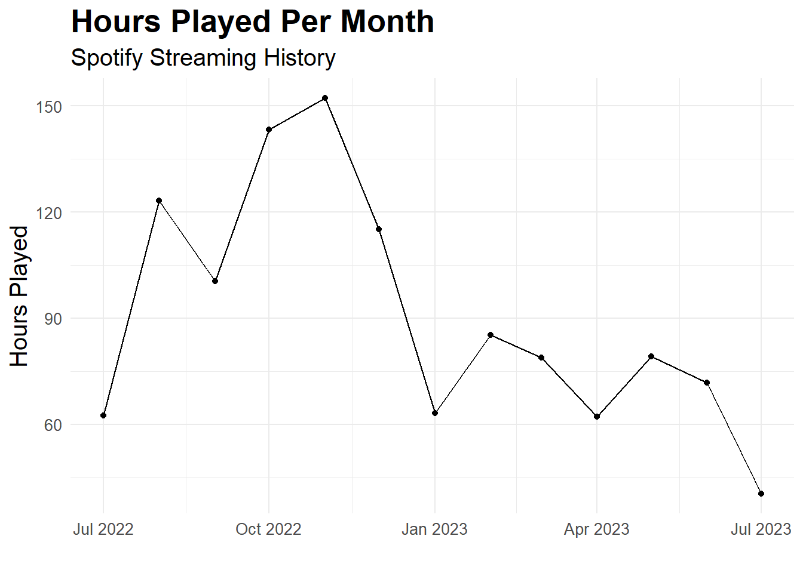
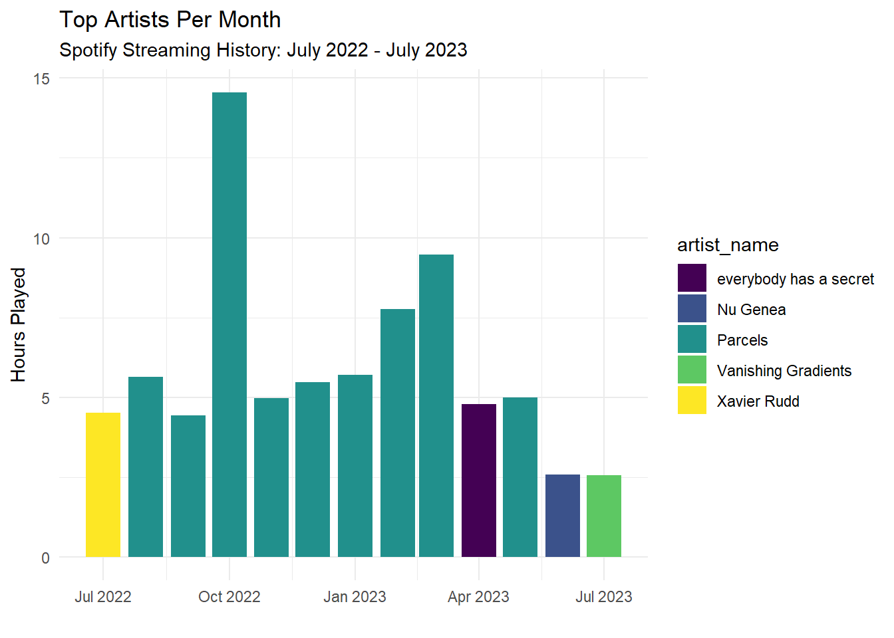
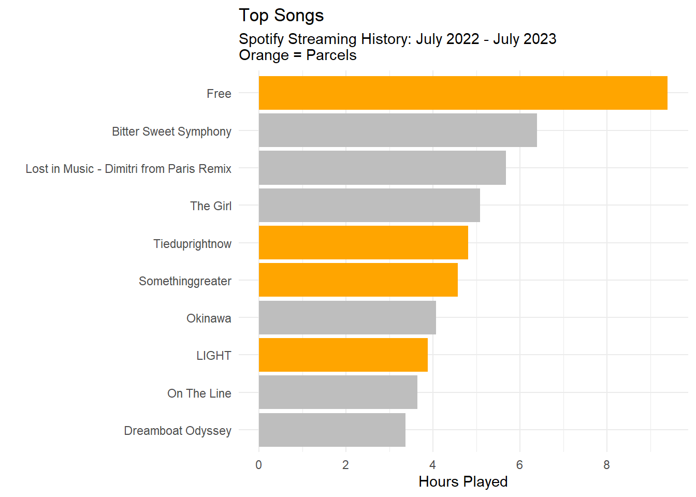
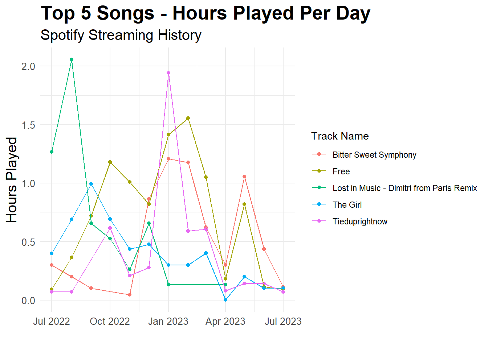

Spotify Exploratory Data Analysis - Streaming History Data
Data Projects
Exploratory Data Analysis
Spotify
My Spotify streaming history throughout July 2022/2023
Author
Johann Wagner
Published
December 29, 2023
Introduction
This is a series of exploratory data analysis (EDA) projects on my Spotify data. The data was downloaded from my Spotify account on July 23rd, 2023. The data is downloaded as a zip file containing several json files and saved on my personal google drive. The json files are then converted into tibbles for analysis using the jsonlite package.
This quarto document is the first of several EDA projects. This project focuses on my streaming history. I’m interested in exploring my listening habits across the time period of the data. I’m also interested in exploring my listening habits across the days of the week.
This process is documented in the following sections:
Setup and Configuration: Loading packages and googledrive API access
Data Loading: How to download and load the data?
Data Tidying: Get a tidy dataset
Data Cleaning: Ensure variables are in correct formats
Data Exploration: Answer one question and come up with two extra ones
Let’s start exploring!
Setup and Configuration
First, let’s load in the packages we’ll need for this project and authorise access to my google drive.
### "Tidyverse"-oriented packages:# The tidyverse is a collection of R packages designed for data science.# All packages share a similar design philosophy, grammar, and data structures.# Tidyverse includes packages such as:# ggplot2, dplyr, tidyr, readr, purr, tibble, stringr, lubridate, and forcats.### https://www.tidyverse.org/library(tidyverse)
── Attaching core tidyverse packages ──────────────────────── tidyverse 2.0.0 ──
✔ dplyr 1.1.4 ✔ readr 2.1.4
✔ forcats 1.0.0 ✔ stringr 1.5.1
✔ ggplot2 3.4.4 ✔ tibble 3.2.1
✔ lubridate 1.9.3 ✔ tidyr 1.3.0
✔ purrr 1.0.2
── Conflicts ────────────────────────────────────────── tidyverse_conflicts() ──
✖ dplyr::filter() masks stats::filter()
✖ dplyr::lag() masks stats::lag()
ℹ Use the conflicted package (<http://conflicted.r-lib.org/>) to force all conflicts to become errors
# To easily create data visualisations with simple and consistent syntax and grammar.# https://ggplot2.tidyverse.org/index.htmllibrary(ggplot2)# To allow interaction between files on Google Drive and R.# https://googledrive.tidyverse.org/library(googledrive)### Other Packages:# To easily create summary statistics to understand and explore data.# https://docs.ropensci.org/skimr/library(skimr)# A fast JSON parser and generator.### https://cran.r-project.org/web/packages/jsonlite/index.htmllibrary(jsonlite)
Attaching package: 'jsonlite'
The following object is masked from 'package:purrr':
flatten
# To easily enable file referencing in project-oriented workflows.# https://here.r-lib.org/library(here)
here() starts at C:/Users/Johan/Documents/GitHub/johann-wagner
# To easily format and scale data in visualisations.# https://scales.r-lib.org/library(scales)
Attaching package: 'scales'
The following object is masked from 'package:purrr':
discard
The following object is masked from 'package:readr':
col_factor
# Google Drive Authentication --------------------------------------------------# To establish a connection between a Google Drive account and R.drive_auth()
! Using an auto-discovered, cached token.
To suppress this message, modify your code or options to clearly consent to
the use of a cached token.
See gargle's "Non-interactive auth" vignette for more details:
<https://gargle.r-lib.org/articles/non-interactive-auth.html>
ℹ The googledrive package is using a cached token for
'johann.wagner@gmail.com'.
# Example of how to download from Google Drive# drive_download(# # Where to download file from# "https://drive.google.com/file/d/1Fjq1r6016H4isB2Cx2wg-Xm9zY7lHhYV/view?usp=drive_link",# # # Where to save it locally# path = here("foldertest", "text2")# )
Data Loading
To access the data, I need to download it from my google drive. The data is requested from Johann’s Spotify account and downloaded as a zip file containing several json files. There are several different json files; however, for this analysis I’m only interested in the Streaming History files.
You will only have access if Johann has given you read access to the email you authorised in 0-00_setup_and_configuration.R.
# Only download raw data if it hasn't already been downloadedif(!dir.exists(here("raw_data"))){dir.create(here("raw_data"), showWarnings =FALSE)# List contents of Spotify Analysis Folderspotify_dribble<-drive_ls("Spotify Analysis")# Download raw datamap2(spotify_dribble$id,spotify_dribble$name,~drive_download( file =as_id(.x), path =here("raw_data", .y), overwrite =TRUE))}# Read in individual raw json as nested lists# JRAW = RAW JSON# RAW_JSON causes alphabetical ordering inconveniences in R environment.JRAW_STREAMING_HISTORY_0<-read_json( path =here("raw_data","StreamingHistory0.json"))JRAW_STREAMING_HISTORY_1<-read_json( path =here("raw_data","StreamingHistory1.json"))JRAW_STREAMING_HISTORY_2<-read_json( path =here("raw_data","StreamingHistory2.json"))
Data Tidying
These json files are then converted into tibbles for analysis using the jsonlite package. The tibbles are then combined into one tibble, as they all have the same columns. I suspect the reason why there are different files is because of the size of the data.
RAW_STREAMING_HISTORY_0<-JRAW_STREAMING_HISTORY_0%>%bind_rows()%>%as_tibble()RAW_STREAMING_HISTORY_1<-JRAW_STREAMING_HISTORY_1%>%bind_rows()|>as_tibble()RAW_STREAMING_HISTORY_2<-JRAW_STREAMING_HISTORY_2%>%bind_rows()|>as_tibble()# Combine all streaming history tibbles into one tibbleRAW_STREAMING_HISTORY<-bind_rows(RAW_STREAMING_HISTORY_0,RAW_STREAMING_HISTORY_1,RAW_STREAMING_HISTORY_2)
Data Cleaning
Let’s ensure the variables are in the correct format.
CLEANED_STREAMING_HISTORY<-RAW_STREAMING_HISTORY|>mutate(# Convert ms to minutes min_played =as.numeric(msPlayed/60000),# Convert artistName to factor artist_name =as.factor(artistName), track_name =as.character(trackName),# Convert endTime into lubridate datetime streaming_datetime =as_date(endTime, format ="%Y-%m-%d %H:%M"))|># Remove unnecessary columnsselect(artist_name,track_name,streaming_datetime,min_played)
Data Exploration
This data exploration has two objectives: 1. To get a sense of the data and to see if there are any issues with the data. 2. To answer several questions that I have about my listening habits.
Sanity Checks
There are 23456 rows in the CLEANED_STREAMING_HISTORY tibble, which is the number of songs/podcast episodes that I have listened to between 2022-07-11 and 2023-07-11. Let’s use the function skim() from the skimr package to get a sense check of the data.
There are 4 columns in the CLEANED_STREAMING_HISTORY tibble. There are 4324 unique artists and 7782 unique tracks in the CLEANED_STREAMING_HISTORY tibble. It is interesting that the shortest track_name has a length of 1 characters and the longest track_name has a length of 179 characters. Interestingly, the shortest track_name has a length of 1 characters. I wonder what song that is. The date ranges between 2022-07-11 and 2023-07-11.
It seems like the data mostly makes sense and that there are a wide range of song names and artist names.
Reshape Data: Streaming per day
Let’s reshape the data so that we can see how much I have streamed per day.
Surprisingly, it seems like Mondays are the days where I have listened to the most streamed music. I wonder if this is because I listen to music on my commute to work? Although, I don’t think I was really working consistently in 2022-23.
So potentially this is because I listen to music when I was studying? To answer this question and gain more insights, I would need to look at my calendar and see what I was doing on those days.
How did my streaming time vary by day?
Let’s plot the total hours played per day.
GGPLOT_HOURS_PLAYED_PER_DAY<-STREAMING_HISTORY_PER_DAY|>ggplot(aes(x =streaming_datetime, y =total_hours_played))+geom_point()+geom_line()+labs( x ="", y ="Hours Played", title ="Hours Played Per Day", subtitle ="Spotify Streaming History")+theme_minimal()+theme( plot.title =element_text( size =20, face ="bold"), plot.subtitle =element_text( size =15), axis.title =element_text( size =15), axis.text =element_text( size =10))GGPLOT_HOURS_PLAYED_PER_DAY
There is a high fluctuation in the number of hours played per day with some days, when very little music was played and some days were a lot of music was played. It seems that there are two days in particular, where I have listened to a lot of music. Let’s investigate these days further, we know that the days are: 2023-05-30 and 2023-02-18. What did I do on these two days? Let’s also include a smoothed line.
GGPLOT_HOURS_PLAYED_PER_DAY+geom_point(aes( colour =ifelse(streaming_datetime==as.Date("2023-05-30")|streaming_datetime==as.Date("2023-02-18"),"red","darkgrey")))+geom_line(colour ="darkgrey")+geom_smooth()+geom_label( label ="Flying to Australia", x =as.Date("2023-05-30"), y =STREAMING_HISTORY_PER_DAY|>filter(streaming_datetime==as.Date("2023-05-30"))|>pull(total_hours_played), vjust =-0.5)+geom_label( label ="Flying to Austria", x =as.Date("2023-02-18"), y =STREAMING_HISTORY_PER_DAY|>filter(streaming_datetime==as.Date("2023-02-18"))|>pull(total_hours_played), vjust =-0.5)+expand_limits( y =c(0, 20))+scale_color_identity()
`geom_smooth()` using method = 'loess' and formula = 'y ~ x'
Flying in the plane and listening to music! That makes sense. The smoothed line suggests that there was more music listened to in the second half of 2022 than the first half of 2023.
How did my streaming time vary by month?
Let’s investigate this further: what was the total number of hours played per month?
STREAMING_HISTORY_PER_MONTH<-CLEANED_STREAMING_HISTORY|>mutate( month_floor =floor_date(streaming_datetime, unit ="month"), year_floor =floor_date(streaming_datetime, unit ="year"))|>group_by(month_floor, year_floor)|>summarise( total_hours_played =sum(min_played/60))
`summarise()` has grouped output by 'month_floor'. You can override using the
`.groups` argument.
Let’s plot the total hours played per month.
STREAMING_HISTORY_PER_MONTH|>ggplot(aes(x =month_floor, y =total_hours_played))+geom_point()+geom_line()+labs( x ="", y ="Hours Played", title ="Hours Played Per Month", subtitle ="Spotify Streaming History")+theme_minimal()+theme( plot.title =element_text( size =20, face ="bold"), plot.subtitle =element_text( size =15), axis.title =element_text( size =15), axis.text =element_text( size =10))

There seems to be a bit of a pattern. Before I went backpacking (Jan 2023), I was listening to a lot more music. Let’s calculate the total number of hours played in both years and see how different they are.
There definitely seems like there is a major difference between the two years. I wonder if this is because I was travelling in 2023 and therefore didn’t have as much time to listen to music. Let’s investigate this further.
Who were my top artists?
Let’s investigate who my top artists are. We will do this by grouping by artist name and then calculating the total number of hours played.
As expected, I’m a massive Parcels fan and the data shows it! Let’s look at my top artists for each month.
CLEANED_STREAMING_HISTORY|>mutate( month_floor =floor_date(streaming_datetime, unit ="month"))|>group_by(month_floor, artist_name)|>summarise( total_hours_played =sum(min_played/60))|>arrange(desc(total_hours_played))|>group_by(month_floor)|>slice(1)|>ggplot(aes(x =month_floor, y =total_hours_played, fill =artist_name))+geom_col()+scale_fill_viridis_d()+labs( x ="", y ="Hours Played", title ="Top Artists Per Month", subtitle ="Spotify Streaming History: July 2022 - July 2023")+theme_minimal()
`summarise()` has grouped output by 'month_floor'. You can override using the
`.groups` argument.

Wow, Parcels really was my favourite artist consistently throughout the time range, although from April 2023 onwards, it seems I started listening to more podcasts. A further question for future investigation: How does my podcast listening behaviour change over time.
What were my top songs?
Let’s move onto top songs. We will do this by grouping by track name and then calculating the total number of hours played.
`summarise()` has grouped output by 'track_name'. You can override using the
`.groups` argument.

Five of the top 10 songs were songs from Parcels.
Let’s look at the top songs for each month.
CLEANED_STREAMING_HISTORY|>mutate( month_floor =floor_date(streaming_datetime, unit ="month"))|>group_by(month_floor, track_name, artist_name)|>summarise( total_hours_played =sum(min_played/60))|>arrange(desc(total_hours_played))|>group_by(month_floor)|>slice(1)|>mutate( fill_colour =case_when(track_name=="Lost in Music - Dimitri from Paris Remix"~"pink",artist_name=="Parcels"~"orange", .default ="grey"))|>ggplot(aes(x =month_floor, y =total_hours_played, fill =fill_colour))+geom_col()+scale_fill_identity()+labs( x ="", y ="Hours Played", title ="Top Songs Per Month", subtitle ="Spotify Streaming History: July 2022 - July 2023\nOrange = Parcels\nPink = Lost in Music - Dimitri from Paris Remix")+theme_minimal()
`summarise()` has grouped output by 'month_floor', 'track_name'. You can
override using the `.groups` argument.
It seems that I listened to Lost in Music - Dimitri from Paris Remix a lot in July/August 2022. Parcels was my top artist for every month, but it seems that I listened to them a lot more in October 2022 and January/Febuary 2023.
How did my top 10 songs vary across time?
Let’s investigate how my top 10 songs varied across time. We will do this by grouping by track name and then calculating the total number of hours played.
top_ten_songs<-CLEANED_STREAMING_HISTORY|>group_by(track_name)|>summarise( total_hours_played =sum(min_played/60))|>arrange(desc(total_hours_played))|>head(5)|>pull(track_name)CLEANED_STREAMING_HISTORY|>filter(track_name%in%top_ten_songs)|>mutate( month_floor =floor_date(streaming_datetime, unit ="month"))|>group_by(month_floor, track_name)|>summarise( total_hours_played =sum(min_played/60))|>ggplot(aes(x =month_floor, y =total_hours_played, colour =track_name))+geom_point()+geom_line()+labs( x ="", y ="Hours Played", title ="Top 5 Songs - Hours Played Per Day", subtitle ="Spotify Streaming History", colour ="Track Name")+theme_minimal()+theme( plot.title =element_text( size =20, face ="bold"), plot.subtitle =element_text( size =15), axis.title =element_text( size =15), axis.text =element_text( size =10))
`summarise()` has grouped output by 'month_floor'. You can override using the
`.groups` argument.

This is super interesting. It seems that there are some rough patterns in my top 5 songs. For example, “Lost in Music - Dimitri from Paris Remix” was played a lot in the first half of 2022 and then not at all in the first half of 2023. Similarly, “The Girl” has a similar downwards trend. “Tieduprightnow” was played a lot in the new year (2023); however, also dropped. “Free” and “Bitter Sweet Symphony” were almost perfectly positively correlated with each other with the exception of late 2022.
I wonder if I could do this analysis for all of my songs and then create a grouping/cluster analysis to see if there are any temporal patterns in my music listening? Are there some songs that I listen to with other songs? Do these songs group together because I usually listen to them from the same playlist? Can I somehow link/predict my playlist data and my streaming data?
Moving Forward
There are quite a few questions that I would like to explore in the future. For example: - I would like to explore how my podcast listening behaviour change over time. - I would like to explore how my top 10 songs varied across time and utilise the gganimate package. - I would really like to do some time series analysis on my streaming history. - I’m curious on linking my streaming history data with my playlist data. I wonder if I can predict my playlist data based on my streaming history data. I think I would typically use Spotify by listening to my playlists, so potentially doing some clustering/grouping analysis on my streaming history data and then linking it to my playlist data would be interesting.
These are all questions that I would like to explore in future! But for now, these were some great first initial data explorations of my Spotify streaming history. I hope you enjoyed reading this post and I hope you learned something new about Spotify streaming history data analysis. If you have any questions or comments, please feel free to reach out to me. I would love to hear from you! :)